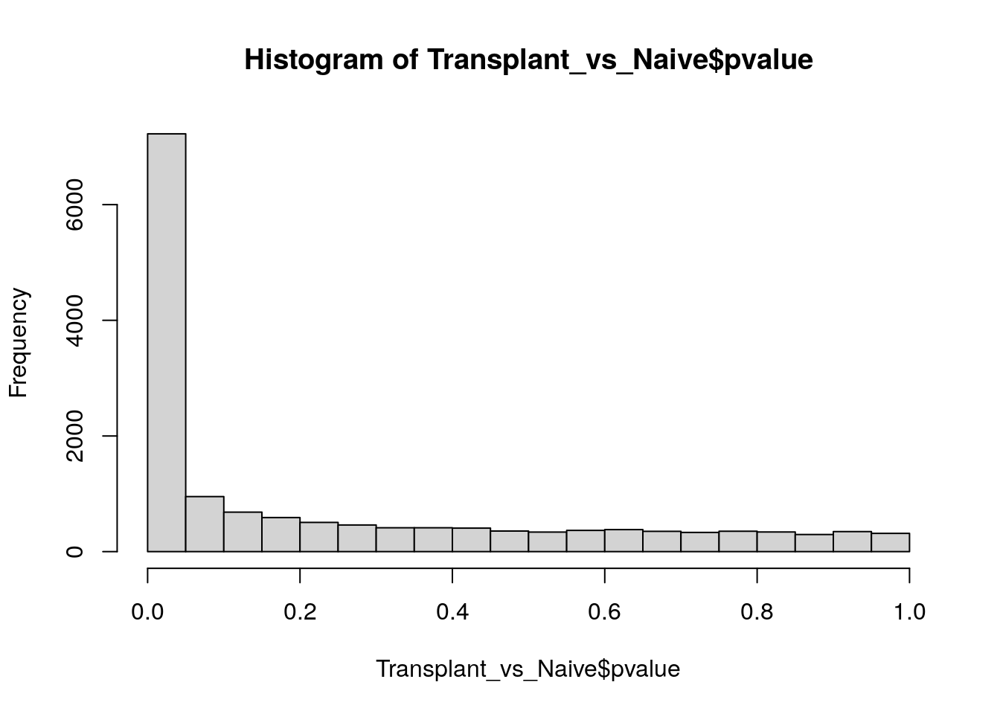
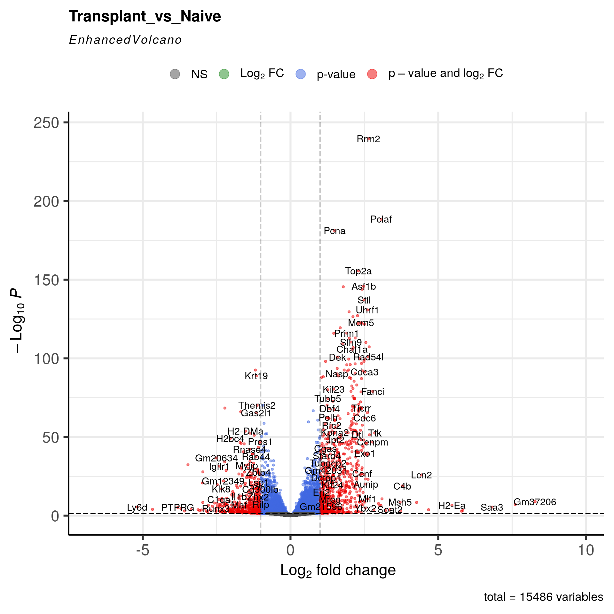
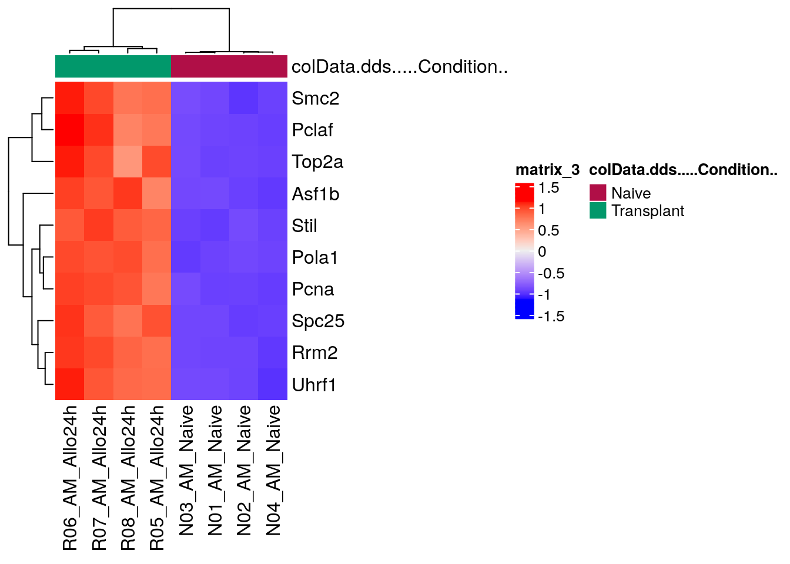

RNA-Seq Tertiary Analysis: Part 2
Bharat Mishra, Ph.D., Austyn Trull, Lara Ianov, Ph.D.
Packages loaded globally
# Set the seed so our results are reproducible:
set.seed(2020)
# Required packages
library(tximport)
library(DESeq2)
library(Glimma)
library(vsn)
# Mouse annotation package we'll use for gene identifier conversion
library(biomaRt)
# We will need them for data handling
library(magrittr)
library(ggrepel)
library(dplyr)
library(tidyverse)
library(readr)
# plotting
library(ggplot2)
library(EnhancedVolcano)
library(ComplexUpset)
library(ComplexHeatmap)
library(RColorBrewer)Differential expression analysis
Input data
In case our objects from part 1 are not present in the environment, here we re-load them:
dds <- readRDS(file = "./results/dds.rds")
colData <- readRDS(file = "./results/colData.rds")
txi <- readRDS(file = "./results/txi.rds")Run DESeq function
The standard differential expression analysis steps in
DESeq2 are wrapped into a single function,
DESeq. This function performs the following key steps:
Estimation of size factors:
DESeq2calculates size factors for each sample tonormalizethe count data and account for differences in library size or sequencing depth.Estimation of dispersions:
DESeq2estimates gene-wise dispersions, which model the relationship between the mean and variance of counts across samples. This accounts for the mean-variance dependency often observed in RNA-Seq data.Fitting the negative binomial generalized linear model:
DESeq2fits a negative binomial GLM to the count data, using the design formula specified during the creation of theDESeqDataSetobject.Wald statistics:
DESeq2computes Wald statistics andp-valuesto test for differential expression between conditions or levels of the variables in the design formula. Note that the Wald statistic is the default test approach.DESeq2also provides the likelihood ratio test.
In summary, DESeq2 provides a streamlined workflow for
differential expression analysis, incorporating normalization,
dispersion estimation, and statistical testing, while allowing users to
specify the desired comparisons and extract results tailored to their
experimental design
dds <- DESeq(dds)
# checking coefficient by resultsNames(dds):
resultsNames(dds)## [1] "Intercept" "Condition_Transplant_vs_Naive"# Dispersion plot
plotDispEsts(dds)In a DESeq2 analysis, the dispersion plot visualizes the
relationship between a gene’s mean expression level and its dispersion
estimate. Dispersion, in this context, quantifies the degree to which
the observed count data for a gene varies around its expected value
under the negative binomial model.
Importance for Assumptions
The dispersion plot is a crucial diagnostic tool for assessing the
validity of several key assumptions underlying the DESeq2
analysis:
Mean-Variance Relationship:
DESeq2assumes a specific relationship between a gene’s mean expression level and its variance (or dispersion). The dispersion plot helps verify whether this assumed relationship holds true in the data. Typically, genes with lower mean expression exhibit higher dispersion (more variability) than those with higher mean expression.Model Fit: The dispersion estimates for each gene should ideally align with the fitted dispersion trend line. Substantial deviations from this trend might indicate that the negative binomial model doesn’t adequately capture the variance structure of the data.
Outliers: The dispersion plot can help identify outlier genes with unusually high dispersion estimates compared to other genes with similar mean expression levels. These outliers might warrant further investigation as they could be indicative of technical artifacts or biological phenomena not accounted for by the model.
A well-behaved dispersion plot should show:
Overall trend: A decreasing trend in dispersion as mean expression increases. Fit to the model: Most gene-wise dispersion estimates should cluster around the fitted trend line. Few outliers: A small number of points far from the trend line might indicate outliers.
By carefully examining the dispersion plot, researchers can assess
whether their data conforms to the assumptions of the
DESeq2 model, identify potential issues, and make informed
decisions about downstream analysis steps.
Transplant_vs_Naive pair-wise comparision
The results function is used to extract a results table
containing log2 fold changes, p-values, and
adjusted p-values from the DESeq analysis. By
default, the results are generated for the comparison of the last level
of the last variable in the design formula against the reference
level.
However, users can specify the desired comparison using the name or
contrast arguments in the results function. The contrast
argument allows for precise specification of the levels and order of
comparison, while the name argument can be used for simple two-group
comparisons. It’s important to note that DESeq2 performs
independent filtering by default, which removes genes with low mean
normalized counts across all samples. This step aims to improve the
estimation of dispersion and reduce the multiple testing burden.
## Transplant_vs_Naive
resCondition <- results(dds, contrast = c("Condition", "Transplant", "Naive"))
summary(resCondition)##
## out of 15486 with nonzero total read count
## adjusted p-value < 0.1
## LFC > 0 (up) : 3721, 24%
## LFC < 0 (down) : 3420, 22%
## outliers [1] : 61, 0.39%
## low counts [2] : 0, 0%
## (mean count < 4)
## [1] see 'cooksCutoff' argument of ?results
## [2] see 'independentFiltering' argument of ?resultsShrinkage of log fold change
Shrinking log fold change (LFC) estimates is a beneficial technique
to enhance the visualization and ranking of genes. To accomplish this
shrinkage, we utilize the lfcShrink function for the
dds object. In this example, we employ the
apeglm method for effect size shrinkage (Zhu, Ibrahim, and
Love 2018), which offers an improvement over the previously used
estimator.
apeglmis the adaptive t prior shrinkage estimator from the apeglm package (Zhu, Ibrahim, and Love 2018). As of version 1.28.0, it is the default estimator.ashris the adaptive shrinkage estimator from the ashr package (Stephens 2016). Here DESeq2 uses the ashr option to fit a mixture of Normal distributions to form the prior, with method=“shrinkage”.normalis the the original DESeq2 shrinkage estimator, an adaptive Normal distribution as prior.
#--------------- Transplant_vs_Naive: Condition_Transplant_vs_Naive --------------
dir.create("./results/Transplant_vs_Naive", recursive = TRUE)
# lfcShrink function
Transplant_vs_Naive <- lfcShrink(dds, coef="Condition_Transplant_vs_Naive", type="apeglm")
Transplant_vs_Naive## log2 fold change (MAP): Condition Transplant vs Naive
## Wald test p-value: Condition Transplant vs Naive
## DataFrame with 15486 rows and 5 columns
## baseMean log2FoldChange lfcSE pvalue padj
## <numeric> <numeric> <numeric> <numeric> <numeric>
## ENSMUSG00000000001.5 3992.86278 0.00063763 0.0559028 9.92683e-01 9.95285e-01
## ENSMUSG00000000028.16 584.56681 2.40697733 0.1753700 5.17428e-44 3.72959e-42
## ENSMUSG00000000037.18 7.49848 -0.13626169 0.3776449 4.39381e-01 5.86031e-01
## ENSMUSG00000000056.8 366.29757 0.33061464 0.1533012 1.96559e-02 4.91078e-02
## ENSMUSG00000000058.7 2117.12191 -0.13734295 0.0768850 6.85395e-02 1.38344e-01
## ... ... ... ... ... ...
## ENSMUSG00002076377.1 118.0144 1.19874095 0.478207 0.000935118 0.00338278
## ENSMUSG00002076457.1 12.1973 -0.05208992 0.359533 0.761654504 0.84851370
## ENSMUSG00002076463.1 52.4421 0.29617535 0.262898 0.154408446 0.26704230
## ENSMUSG00002076763.1 18.2897 -0.00998566 0.317344 0.958042773 0.97478956
## ENSMUSG00002076916.1 48.3010 0.05373479 0.278437 0.793762229 0.86958682Explore the DESeq2 result
For the purposes of this workshop we will use the results which have
implemented shrinkage of log2 fold changes (from the
Transplant_vs_Naive variable).
P-value histogram plot
Visualizing the histogram of p-values is a valuable practice when assessing the distribution of your hypotheses (null vs alternative). This plot aids in evaluating whether your data meets the assumptions required for False Discovery Rate (FDR) correction. Although FDR correction is typically applied to control for false positives, there are specific instances where careful consideration is warranted.
These edge cases go beyond the scope of this workshop, but we encourage trainees to read the following post that nicely summarize data patterns to be aware of: http://varianceexplained.org/statistics/interpreting-pvalue-histogram/
# distribution of p-vals (always want to plot non-corrected p-values for this)
hist(Transplant_vs_Naive$pvalue)
Each bar represents the number of genes with a p-value in the given bin (bin size=0.05).
MA Plot
We can visualize the results in many ways. A good check is to explore
the relationship between log2fold changes, significant DE genes and the
genes mean count. DESeq2 provides a useful function to do
so, plotMA().
plotMA(Transplant_vs_Naive)Summary statistics
In DESeq2, the adjusted p-value (also known
as padj) is a modified version of the raw
p-value that accounts for multiple hypothesis testing. When
you perform thousands of statistical tests simultaneously (as in
differential gene expression analysis), the probability of observing
some false positives increases. The adjusted p-value
controls for this by estimating the false discovery rate (FDR). The
Default cutoff is adjusted p-value < 0.1.
Discussion Question
In part 1, we applied pre-filtering to remove very low abundance genes. How is pre-filtering linked to multiple hypothesis testing / false discovery rates?
Default FDR Correction Method
The default method for FDR correction in DESeq2 is the
Benjamini-Hochberg (BH) procedure. This method ranks the
p-values from smallest to largest and calculates an
adjusted p-value for each gene based on its rank and the
total number of tests performed. The adjusted p-value
represents the estimated proportion of false positives among all genes
with an equal or smaller p-value.
summary(Transplant_vs_Naive)##
## out of 15486 with nonzero total read count
## adjusted p-value < 0.1
## LFC > 0 (up) : 3721, 24%
## LFC < 0 (down) : 3420, 22%
## outliers [1] : 61, 0.39%
## low counts [2] : 0, 0%
## (mean count < 4)
## [1] see 'cooksCutoff' argument of ?results
## [2] see 'independentFiltering' argument of ?resultsYou can customize adjusted p-value cutoff by changing
the default parameter:
summary(Transplant_vs_Naive, alpha = 0.05)##
## out of 15486 with nonzero total read count
## adjusted p-value < 0.05
## LFC > 0 (up) : 3342, 22%
## LFC < 0 (down) : 2854, 18%
## outliers [1] : 61, 0.39%
## low counts [2] : 0, 0%
## (mean count < 4)
## [1] see 'cooksCutoff' argument of ?results
## [2] see 'independentFiltering' argument of ?resultsAt a first glance, this data suggests that there are significantly
large transcriptomics alterations based on adjusted p-value
< 0.05.
Challenge: different approaches to limit the DEGs count
Click here for solution
summary(Transplant_vs_Naive, alpha = 0.01)##
## out of 15486 with nonzero total read count
## adjusted p-value < 0.01
## LFC > 0 (up) : 2730, 18%
## LFC < 0 (down) : 2134, 14%
## outliers [1] : 61, 0.39%
## low counts [2] : 0, 0%
## (mean count < 4)
## [1] see 'cooksCutoff' argument of ?results
## [2] see 'independentFiltering' argument of ?resultsNote: the summary function is simplistic in nature. In
the later portions of the workshop we will also cover another variable
to filter results on: log2 fold changes.
Sort by Adjusted p.value
Transplant_vs_Naive <- Transplant_vs_Naive[order(Transplant_vs_Naive$padj),]
head(Transplant_vs_Naive)## log2 fold change (MAP): Condition Transplant vs Naive
## Wald test p-value: Condition Transplant vs Naive
## DataFrame with 6 rows and 5 columns
## baseMean log2FoldChange lfcSE pvalue padj
## <numeric> <numeric> <numeric> <numeric> <numeric>
## ENSMUSG00000020649.12 3044.32 2.64171 0.0792717 1.64953e-244 2.54441e-240
## ENSMUSG00000040204.7 2289.67 3.06535 0.1037299 4.37636e-193 3.37526e-189
## ENSMUSG00000027342.15 6740.49 1.49248 0.0515139 1.42499e-185 7.32684e-182
## ENSMUSG00000020914.18 7125.77 2.30101 0.0856891 5.38773e-160 2.07764e-156
## ENSMUSG00000005470.9 1164.67 2.47450 0.0951897 5.21848e-150 1.60990e-146
## ENSMUSG00000006678.7 1092.42 1.78528 0.0687794 1.26120e-149 3.24234e-146Make annotation object
At this point, we will create an annotation object which we will use in the later section of this workshop to add annotation information (e.g.: gene names) to our results.
Note that in the code below we select mm39 (GENCODE release M32) corresponding to Ensembl 109 since this is the genome / GTF versions we used in secondary analysis. You should always aim to match the genomic version in tertiary analysis to what was used in the secondary analysis.
Also note that while there are many ways to annotate your data, the
code chunks below implements functions from the biomaRt
package to fetch the annotations.
As a starting point, let’s check the available Ensembl versions, to ensure we select the correct one for our data:
# check available urls (current and archives):
listEnsemblArchives()## name date url version current_release
## 1 Ensembl GRCh37 Feb 2014 https://grch37.ensembl.org GRCh37
## 2 Ensembl 112 May 2024 https://may2024.archive.ensembl.org 112 *
## 3 Ensembl 111 Jan 2024 https://jan2024.archive.ensembl.org 111
## 4 Ensembl 110 Jul 2023 https://jul2023.archive.ensembl.org 110
## 5 Ensembl 109 Feb 2023 https://feb2023.archive.ensembl.org 109
## 6 Ensembl 108 Oct 2022 https://oct2022.archive.ensembl.org 108
## 7 Ensembl 107 Jul 2022 https://jul2022.archive.ensembl.org 107
## 8 Ensembl 106 Apr 2022 https://apr2022.archive.ensembl.org 106
## 9 Ensembl 105 Dec 2021 https://dec2021.archive.ensembl.org 105
## 10 Ensembl 104 May 2021 https://may2021.archive.ensembl.org 104
## 11 Ensembl 103 Feb 2021 https://feb2021.archive.ensembl.org 103
## 12 Ensembl 102 Nov 2020 https://nov2020.archive.ensembl.org 102
## 13 Ensembl 101 Aug 2020 https://aug2020.archive.ensembl.org 101
## 14 Ensembl 100 Apr 2020 https://apr2020.archive.ensembl.org 100
## 15 Ensembl 99 Jan 2020 https://jan2020.archive.ensembl.org 99
## 16 Ensembl 98 Sep 2019 https://sep2019.archive.ensembl.org 98
## 17 Ensembl 97 Jul 2019 https://jul2019.archive.ensembl.org 97
## 18 Ensembl 80 May 2015 https://may2015.archive.ensembl.org 80
## 19 Ensembl 77 Oct 2014 https://oct2014.archive.ensembl.org 77
## 20 Ensembl 75 Feb 2014 https://feb2014.archive.ensembl.org 75
## 21 Ensembl 54 May 2009 https://may2009.archive.ensembl.org 54We can see from the output above, that the url matching the Ensembl
109 version is https://feb2023.archive.ensembl.org. Thus,
we set the hosting url below to this specific version.
Further, biomaRt provides several attributes you may add
to your data for annotation. The attributes selected below are some of
the most commonly used and needed metadata:
You can list all available attributes for a glance
listAttributes(ensembl) where ensembl is the
Mart object we will create in this section.
# Specify the version specific archive:
host_url <- "https://feb2023.archive.ensembl.org"
# attributes
attributes_to_add <- c("ensembl_gene_id", "external_gene_name","gene_biotype",
"description","chromosome_name","start_position",
"end_position","strand")Next, select the species. If you are unsure on how to properly add
your species, you can see the options by running
listDatasets(mart=useMart("ENSEMBL_MART_ENSEMBL", host = host_url))
species <- "mmusculus_gene_ensembl"With all required parameters set for biomaRt, run the
code chunk below to: * Connect to the selected BioMart database * Use
Ensembl IDs as the input query * Fetch the annotation information
ensembl <- useMart("ENSEMBL_MART_ENSEMBL", dataset = species, host = host_url)
listMarts(host=host_url)## biomart version
## 1 ENSEMBL_MART_ENSEMBL Ensembl Genes 109
## 2 ENSEMBL_MART_MOUSE Mouse strains 109
## 3 ENSEMBL_MART_SNP Ensembl Variation 109
## 4 ENSEMBL_MART_FUNCGEN Ensembl Regulation 109# although we filtered counts initially, we
# fetch the annotation for all genes:
gene_ids <- rownames(txi$counts)
# remove GENCODE gene version to make ids compatible to Ensemvbl:
gene_ids <- gsub("\\.[0-9]+","",gene_ids)
head(gene_ids)## [1] "ENSMUSG00000000001" "ENSMUSG00000000003" "ENSMUSG00000000028" "ENSMUSG00000000031" "ENSMUSG00000000037" "ENSMUSG00000000049"# fetch annotations
genemap <- getBM(attributes = attributes_to_add,
filters = "ensembl_gene_id",
values = gene_ids,
mart = ensembl,
useCache = FALSE)## Batch submitting query [======>-------------------------------------------------------------------------------] 8% eta: 14sBatch
## submitting query [=============>------------------------------------------------------------------------] 17% eta: 11sBatch submitting
## query [=====================>----------------------------------------------------------------] 25% eta: 9sBatch submitting query
## [============================>---------------------------------------------------------] 33% eta: 8sBatch submitting query
## [===================================>--------------------------------------------------] 42% eta: 7sBatch submitting query
## [==========================================>-------------------------------------------] 50% eta: 6sBatch submitting query
## [=================================================>------------------------------------] 58% eta: 5sBatch submitting query
## [========================================================>-----------------------------] 67% eta: 4sBatch submitting query
## [===============================================================>----------------------] 75% eta: 3sBatch submitting query
## [=======================================================================>--------------] 83% eta: 2sBatch submitting query
## [==============================================================================>-------] 92% eta: 1shead(genemap)## ensembl_gene_id external_gene_name gene_biotype
## 1 ENSMUSG00000000001 Gnai3 protein_coding
## 2 ENSMUSG00000000003 Pbsn protein_coding
## 3 ENSMUSG00000000028 Cdc45 protein_coding
## 4 ENSMUSG00000000031 H19 lncRNA
## 5 ENSMUSG00000000037 Scml2 protein_coding
## 6 ENSMUSG00000000049 Apoh protein_coding
## description chromosome_name start_position
## 1 guanine nucleotide binding protein (G protein), alpha inhibiting 3 [Source:MGI Symbol;Acc:MGI:95773] 3 108014596
## 2 probasin [Source:MGI Symbol;Acc:MGI:1860484] X 76881507
## 3 cell division cycle 45 [Source:MGI Symbol;Acc:MGI:1338073] 16 18599197
## 4 H19, imprinted maternally expressed transcript [Source:MGI Symbol;Acc:MGI:95891] 7 142129262
## 5 Scm polycomb group protein like 2 [Source:MGI Symbol;Acc:MGI:1340042] X 159865521
## 6 apolipoprotein H [Source:MGI Symbol;Acc:MGI:88058] 11 108234180
## end_position strand
## 1 108053462 -1
## 2 76897229 -1
## 3 18630737 -1
## 4 142131886 -1
## 5 160041209 1
## 6 108305222 1nrow(genemap)## [1] 55891length(gene_ids) == nrow(genemap)## [1] TRUEsaveRDS(genemap, file = "./results/genemap.rds")Add annotation to DEG results
Now that we have the differentially expressed genes (DEG), we can use the annotated object created earlier, to add gene metadata to the DEG results:
# add the current gene_ids to new columns and remove the GENCODE version
# Note we add 2 columns (one with GENCODE version and one without it) to preserve
# version information if needed:
Transplant_vs_Naive$ensembl_gene_id_version <- rownames(Transplant_vs_Naive)
Transplant_vs_Naive$ensembl_gene_id <- rownames(Transplant_vs_Naive)
Transplant_vs_Naive$ensembl_gene_id <- gsub("\\.[0-9]+", "", Transplant_vs_Naive$ensembl_gene_id)
# join the DEG list and biomaRt list by "ensembl_gene_id"
Transplant_vs_Naive_annotated <- dplyr::left_join(x = as.data.frame(Transplant_vs_Naive),
y = genemap,
by = (c("ensembl_gene_id")))
# add Ensembl IDs as row names:
rownames(Transplant_vs_Naive_annotated) <- Transplant_vs_Naive_annotated$ensembl_gene_id
head(Transplant_vs_Naive_annotated, 5)## baseMean log2FoldChange lfcSE pvalue padj ensembl_gene_id_version ensembl_gene_id
## ENSMUSG00000020649 3044.320 2.641712 0.07927173 1.649533e-244 2.544405e-240 ENSMUSG00000020649.12 ENSMUSG00000020649
## ENSMUSG00000040204 2289.666 3.065352 0.10372992 4.376356e-193 3.375265e-189 ENSMUSG00000040204.7 ENSMUSG00000040204
## ENSMUSG00000027342 6740.487 1.492478 0.05151393 1.424992e-185 7.326835e-182 ENSMUSG00000027342.15 ENSMUSG00000027342
## ENSMUSG00000020914 7125.770 2.301005 0.08568914 5.387733e-160 2.077644e-156 ENSMUSG00000020914.18 ENSMUSG00000020914
## ENSMUSG00000005470 1164.674 2.474504 0.09518970 5.218481e-150 1.609901e-146 ENSMUSG00000005470.9 ENSMUSG00000005470
## external_gene_name gene_biotype description
## ENSMUSG00000020649 Rrm2 protein_coding ribonucleotide reductase M2 [Source:MGI Symbol;Acc:MGI:98181]
## ENSMUSG00000040204 Pclaf protein_coding PCNA clamp associated factor [Source:MGI Symbol;Acc:MGI:1915276]
## ENSMUSG00000027342 Pcna protein_coding proliferating cell nuclear antigen [Source:MGI Symbol;Acc:MGI:97503]
## ENSMUSG00000020914 Top2a protein_coding topoisomerase (DNA) II alpha [Source:MGI Symbol;Acc:MGI:98790]
## ENSMUSG00000005470 Asf1b protein_coding anti-silencing function 1B histone chaperone [Source:MGI Symbol;Acc:MGI:1914179]
## chromosome_name start_position end_position strand
## ENSMUSG00000020649 12 24758240 24764145 1
## ENSMUSG00000040204 9 65797519 65810548 1
## ENSMUSG00000027342 2 132091082 132095234 -1
## ENSMUSG00000020914 11 98883769 98915015 -1
## ENSMUSG00000005470 8 84682136 84696826 1Save data outputs
First, let’s save our annotated DEG list as csv file:
write.csv(Transplant_vs_Naive_annotated,
file = "./results/Transplant_vs_Naive/Transplant_vs_Naive_annotated_DEGlist.csv")Second, let’s save the normalized counts as a csv file. This is critical output for data visualization as it contain normalized counts per sample:
# add normalized counts to a new vector:
normalized_counts <- as.data.frame(counts(dds, normalized = TRUE))
# add annotation
# NOTE: here we add a new column names using the `mutate` function
# as an alternative to the approach shown in the DEG results
normalized_counts_annotated <- normalized_counts %>%
mutate(ensembl_gene_id_version = rownames(normalized_counts),
ensembl_gene_id = rownames(normalized_counts)) %>%
mutate(ensembl_gene_id = gsub("\\.[0-9]+","",ensembl_gene_id)) %>%
dplyr::left_join(x = ., y = genemap, by = (c("ensembl_gene_id")))
write.csv(normalized_counts_annotated,
file="./results/Transplant_vs_Naive/normalized_counts.csv",
row.names = FALSE)To simplify the code sections below, we rename the longer variable names to shorter ones: (we explicitly named them longer in earlier sections for clarity in the workflow for teaching purposes)
T_vs_N_annotated <- Transplant_vs_Naive_annotated
counts_annotated <- normalized_counts_annotatedDEG plots
In the sections below, note that we apply an absolute log2 fold change cut-off in addition to adjusted p-values to define DEGs.
Volcano plot
EnhancedVolcano(T_vs_N_annotated,
lab = T_vs_N_annotated$external_gene_name,
x = "log2FoldChange",
y = "padj",
title = "Transplant_vs_Naive",
pCutoff = 0.05,
FCcutoff = 1.0,
pointSize = 1.0,
labSize = 4)
Visualize selected set of genes
Apply standard DEG filters
adj.P.Val <= 0.05, logFC <= -1 | logFC >= 1.
T_vs_N_annotated_DEGs <- T_vs_N_annotated %>%
dplyr::filter(padj <= 0.05, log2FoldChange <= -1 | log2FoldChange >= 1) %>%
dplyr::arrange(dplyr::desc(abs(log2FoldChange))) %>%
# Filter out the duplicated rows using `dplyr::distinct()`
dplyr::distinct(external_gene_name, .keep_all = TRUE)# Get all DE genes
genes <- T_vs_N_annotated_DEGs[order(T_vs_N_annotated_DEGs$padj), ] %>%
rownames()
heatmapData <- normalized_counts[genes, ]
# Scale counts for visualization
heatmapData <- t(scale(t(heatmapData)))
# Add annotation
heatmapColAnnot <- data.frame(colData(dds)[, "Condition"])
heatmapColAnnot <- HeatmapAnnotation(df = heatmapColAnnot)
# Plot as heatmap
DEG_heatmap <- ComplexHeatmap::Heatmap(heatmapData,
top_annotation = heatmapColAnnot,
cluster_rows = TRUE,
cluster_columns = TRUE,
show_row_names = FALSE)
DEG_heatmap
Challenge: Plot top 10 DEGs by both direction
Click here for solution
# Get top 20 DE genes
# Select top 10 up-regulated genes
top_up_genes <- T_vs_N_annotated_DEGs[order(T_vs_N_annotated_DEGs$padj), ] %>%
filter(log2FoldChange > 1) %>% # Focus on up-regulated (positive log2fc)
head(20) %>%
rownames()
# Select top 10 down-regulated genes
top_down_genes <- T_vs_N_annotated_DEGs[order(T_vs_N_annotated_DEGs$padj), ] %>%
filter(log2FoldChange < -1) %>% # Focus on up-regulated (negative log2fc)
head(20) %>%
rownames()
genes <- c(top_up_genes, top_down_genes)
heatmapData <- normalized_counts[genes, ]
# Scale counts for visualization
heatmapData <- t(scale(t(heatmapData)))
# Add annotation
heatmapColAnnot <- data.frame(colData(dds)[, "Condition"])
heatmapColAnnot <- HeatmapAnnotation(df = heatmapColAnnot)
# Plot as heatmap
DEG_heatmap <- ComplexHeatmap::Heatmap(heatmapData,
top_annotation = heatmapColAnnot,
cluster_rows = TRUE,
cluster_columns = TRUE,
show_row_names = TRUE)
DEG_heatmapChallenge: Plot top 10 DEGs by gene names
Click here for solution
T_vs_N_fil <- T_vs_N_annotated[! is.na(T_vs_N_annotated$external_gene_name)
& T_vs_N_annotated$external_gene_name !="", ]
counts_fil <- counts_annotated[! is.na(counts_annotated$external_gene_name)
& counts_annotated$external_gene_name !="", ]
unique_gene_names <- make.unique(T_vs_N_fil$external_gene_name, sep = ".")
unique_gene_names_count <- make.unique(counts_fil$external_gene_name, sep = ".")
rownames(T_vs_N_fil) <- unique_gene_names
rownames(counts_fil) <- unique_gene_names_count# Get top 10 DE genes
genes <- T_vs_N_fil[order(T_vs_N_fil$padj), ] %>%
head(10) %>%
rownames()
heatmapData <- counts_fil[genes, ]
# Scale counts for visualization
heatmapData <- t(scale(t(heatmapData[, 1:8])))
# Add annotation
heatmapColAnnot <- data.frame(colData(dds)[, "Condition"])
heatmapColAnnot <- HeatmapAnnotation(df = heatmapColAnnot)
# Plot as heatmap
DEG_heatmap <- ComplexHeatmap::Heatmap(heatmapData,
top_annotation = heatmapColAnnot,
cluster_rows = TRUE,
cluster_columns = TRUE,
show_row_names = TRUE)
DEG_heatmap
Plot selected genes
Box plot
# Define the genes of interest.
goi <- T_vs_N_fil[order(T_vs_N_fil$padj), ] %>%
head(10) %>%
rownames()countData <- counts_fil[goi, 1:8]
tcounts <- t(countData) %>%
merge(colData(dds), ., by="row.names") %>%
gather(gene, expression, (ncol(.)-length(goi)+1):ncol(.))Now, create a single faceted plot.
ggplot(tcounts, aes(Condition, expression, fill=Time)) +
geom_boxplot() +
facet_wrap(~gene, scales="free_y") +
labs(x="Condition",
y="Expression (log normalized counts)",
fill="(Time)",
title="Top Results")count plot
DESeq2 provides a simple count function which can be implemented for brief / quick visualizations:
plotCounts(dds,
gene = "ENSMUSG00000040204.7",
intgroup = "Condition",
normalized = TRUE)Glimma report
Glimma is an interactive R widget for creating plots for differential
expression analysis, created using the Vega and htmlwidgets
frameworks. The created plots can be embedded in R Markdown, or exported
as standalone HTML documents.
MA Plot
The MA plot is a visualization that plots the log-fold-change between experimental groups (M) against the mean expression across all the samples (A) for each gene.
The Glimma MA plot contains two main components:
a plot of summary statistics across all genes that have been tested, and
a plot of gene expression from individual samples for a given gene
The second plot shows gene expression from the last selected sample, which can be selected from the table or directly from the summary plot.
# first choose selected annotation to be present in report
# (we choose a subset to make visualization easier/reduce # of cols)
selected_annotation <- data.frame(GeneID = rownames(normalized_counts))
selected_annotation %>%
mutate(ensembl_gene_id = selected_annotation$GeneID) %>%
mutate(ensembl_gene_id = gsub("\\.[0-9]+","",ensembl_gene_id)) %>%
plyr::join(., genemap, by = c("ensembl_gene_id")) %>%
dplyr::select(GeneID, external_gene_name, gene_biotype) %>%
{.} -> selected_annotation
head(selected_annotation)## GeneID external_gene_name gene_biotype
## 1 ENSMUSG00000000001.5 Gnai3 protein_coding
## 2 ENSMUSG00000000028.16 Cdc45 protein_coding
## 3 ENSMUSG00000000037.18 Scml2 protein_coding
## 4 ENSMUSG00000000056.8 Narf protein_coding
## 5 ENSMUSG00000000058.7 Cav2 protein_coding
## 6 ENSMUSG00000000078.8 Klf6 protein_coding# use the original DESeq2 res. obj since row order is the same across all to facilitate
# NOTE: basemean are shown in the natural log scale in the report
file_name <- paste0("./results/Transplant_vs_Naive/Glimma_ma_plot.html")
rownames(Transplant_vs_Naive) <- Transplant_vs_Naive$ensembl_gene_id_version
Transplant_vs_Naive <- Transplant_vs_Naive[order(Transplant_vs_Naive$ensembl_gene_id_version, decreasing = FALSE),]
print(all(rownames(Transplant_vs_Naive) == rownames(normalized_counts))) # must always be true for glimma reports## [1] TRUE# select sig (arbitrary choice of padj < 0.05) - to be highlighted in MA plot
sig_genes <- as.numeric(Transplant_vs_Naive$padj<0.05)
glMDPlot(Transplant_vs_Naive,
status=sig_genes,
counts=normalized_counts,
side.main="GeneID",
groups=colData$Condition,
folder = file_name,
html = "MA-Plot",
anno = selected_annotation,
side.xlab = "Group",
side.log = FALSE,
launch=FALSE)session info
sessionInfo()## R version 4.3.3 (2024-02-29)
## Platform: x86_64-pc-linux-gnu (64-bit)
## Running under: Ubuntu 22.04.4 LTS
##
## Matrix products: default
## BLAS: /usr/lib/x86_64-linux-gnu/openblas-pthread/libblas.so.3
## LAPACK: /usr/lib/x86_64-linux-gnu/openblas-pthread/libopenblasp-r0.3.20.so; LAPACK version 3.10.0
##
## locale:
## [1] LC_CTYPE=en_US.UTF-8 LC_NUMERIC=C LC_TIME=en_US.UTF-8 LC_COLLATE=en_US.UTF-8
## [5] LC_MONETARY=en_US.UTF-8 LC_MESSAGES=en_US.UTF-8 LC_PAPER=en_US.UTF-8 LC_NAME=C
## [9] LC_ADDRESS=C LC_TELEPHONE=C LC_MEASUREMENT=en_US.UTF-8 LC_IDENTIFICATION=C
##
## time zone: Etc/UTC
## tzcode source: system (glibc)
##
## attached base packages:
## [1] grid stats4 stats graphics grDevices utils datasets methods base
##
## other attached packages:
## [1] ComplexUpset_1.3.3 EnhancedVolcano_1.20.0 RColorBrewer_1.1-3 ComplexHeatmap_2.18.0
## [5] lubridate_1.9.3 forcats_1.0.0 stringr_1.5.1 purrr_1.0.2
## [9] readr_2.1.5 tidyr_1.3.1 tibble_3.2.1 tidyverse_2.0.0
## [13] dplyr_1.1.4 ggrepel_0.9.5 ggplot2_3.5.0 magrittr_2.0.3
## [17] biomaRt_2.58.2 vsn_3.70.0 Glimma_2.12.0 DESeq2_1.42.1
## [21] SummarizedExperiment_1.32.0 Biobase_2.62.0 MatrixGenerics_1.14.0 matrixStats_1.3.0
## [25] GenomicRanges_1.54.1 GenomeInfoDb_1.38.8 IRanges_2.36.0 S4Vectors_0.40.2
## [29] BiocGenerics_0.48.1 tximport_1.30.0
##
## loaded via a namespace (and not attached):
## [1] rstudioapi_0.16.0 jsonlite_1.8.8 shape_1.4.6.1 farver_2.1.1 rmarkdown_2.26
## [6] GlobalOptions_0.1.2 zlibbioc_1.48.2 vctrs_0.6.5 memoise_2.0.1 RCurl_1.98-1.14
## [11] htmltools_0.5.8.1 S4Arrays_1.2.1 progress_1.2.3 curl_5.2.1 SparseArray_1.2.4
## [16] sass_0.4.9 bslib_0.7.0 htmlwidgets_1.6.4 fontawesome_0.5.2 plyr_1.8.9
## [21] cachem_1.0.8 lifecycle_1.0.4 iterators_1.0.14 pkgconfig_2.0.3 Matrix_1.6-5
## [26] R6_2.5.1 fastmap_1.1.1 GenomeInfoDbData_1.2.11 clue_0.3-65 numDeriv_2016.8-1.1
## [31] digest_0.6.35 colorspace_2.1-0 patchwork_1.2.0 AnnotationDbi_1.64.1 RSQLite_2.3.6
## [36] filelock_1.0.3 labeling_0.4.3 fansi_1.0.6 timechange_0.3.0 httr_1.4.7
## [41] abind_1.4-5 compiler_4.3.3 bit64_4.0.5 withr_3.0.0 doParallel_1.0.17
## [46] BiocParallel_1.36.0 DBI_1.2.2 hexbin_1.28.3 highr_0.10 MASS_7.3-60.0.1
## [51] rappdirs_0.3.3 DelayedArray_0.28.0 rjson_0.2.21 tools_4.3.3 glue_1.7.0
## [56] cluster_2.1.6 generics_0.1.3 gtable_0.3.5 tzdb_0.4.0 preprocessCore_1.64.0
## [61] hms_1.1.3 xml2_1.3.6 utf8_1.2.4 XVector_0.42.0 foreach_1.5.2
## [66] pillar_1.9.0 emdbook_1.3.13 vroom_1.6.5 limma_3.58.1 circlize_0.4.16
## [71] BiocFileCache_2.10.2 lattice_0.22-6 bit_4.0.5 tidyselect_1.2.1 locfit_1.5-9.9
## [76] Biostrings_2.70.3 knitr_1.46 edgeR_4.0.16 xfun_0.43 statmod_1.5.0
## [81] stringi_1.8.3 yaml_2.3.8 evaluate_0.23 codetools_0.2-20 bbmle_1.0.25.1
## [86] BiocManager_1.30.22 cli_3.6.2 affyio_1.72.0 munsell_0.5.1 jquerylib_0.1.4
## [91] Rcpp_1.0.12 dbplyr_2.5.0 coda_0.19-4.1 png_0.1-8 bdsmatrix_1.3-7
## [96] XML_3.99-0.16.1 parallel_4.3.3 blob_1.2.4 prettyunits_1.2.0 bitops_1.0-7
## [101] mvtnorm_1.2-4 apeglm_1.24.0 scales_1.3.0 affy_1.80.0 crayon_1.5.2
## [106] GetoptLong_1.0.5 rlang_1.1.3 KEGGREST_1.42.0